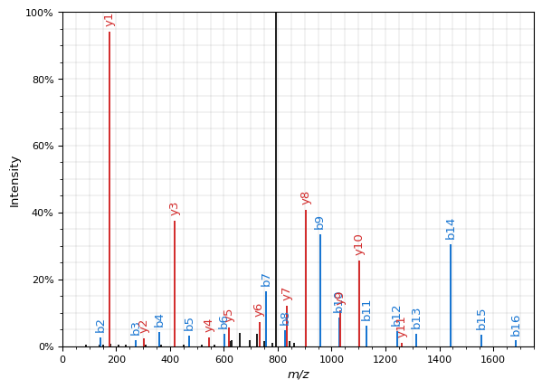

Quickstart
For a more detailed overview of how to use the command line, check the CLI Reference section of the documentation
If you woul like any help/would like something implemented, feel free to open a github issue or message me :)
Installation
This is currently being distributed as a pypi package, to get the latest version use the following ...
User Install:
Development install:
git clone https://github.com/jspaezp/elfragmentador.git
cd elfragmentador
pip install /content/elfragmentador
# or ...
poetry install
Usage
Prediction
$ elfragmentador predict --fasta tests/data/fasta/uniprot-proteome_UP000464024_reviewed_yes.fasta --nce 32 --charges 2 --missed_cleavages 0 --min_length 7 --out foo.dlib
Rescoring
This will add a couple of columns to a percolator input file, which can be used before you run it though percolator or mokapot!
Check performance
I have implemented a way to compare the predictions of the model with an several spectral librariy-related files. The easiest one for is the mokapot .peptides.txt file after a comet search.
$ poetry run elfragmentador evaluate --input mokapot.peptides.txt.evaluation.log --nce 24,28,30,32,34,38,42 --out evaluation.csv --assure_notrain 1
Predict Spectra
You can use it from python like so ...
... Note: The main branch right now has a problem where spectrum plotting (exporting to spectrum_utils is broken)
import sys
import torch
import elfragmentador as ef
from elfragmentador.model import PepTransformerModel
from loguru import logger
# This makes a lot slimmer the logging ingofrmation
logger.remove()
logger.add(sys.stderr, level="WARNING")
checkpoint_path = "some/path/to/a/checkpoint"
# or
checkpoint_path = ef.DEFAULT_CHECKPOINT
model = PepTransformerModel.load_from_checkpoint(checkpoint_path)
# Set the model as evaluation mode
_ = model.eval()
with torch.no_grad():
tensor_predictions = model.predict_from_seq("MYPEPTIDEK/2", nce=27.0)
# PredictionResults(irt=tensor([0.2022], grad_fn=<SqueezeBackward1>), spectra=tensor([0.0000e+00, ...grad_fn=<SqueezeBackward1>))
# or ...
import matplotlib.pyplot as plt
spectrum_prediction = model.predict_from_seq(
"MYPEPTIDEK/3", nce=27.0, as_spectrum=True
)
spectrum_prediction = model.predict_from_seq(
"AAESLQRAEATNAELER/2", nce=22.0, as_spectrum=True
)
spectrum_prediction.plot()
plt.show()
stderr
Downloading: "https://github.com/jspaezp/elfragmentador-modelzoo/raw/9e6ee76cde441d2459ec52418ec6f874e69f9a7b/0.55.0a2/0.55.0a2_ef_21e_4h_64_120_nel5ndl6_500_lmlp_sim01_val_l%3D0.129946_epoch%3D020.ckpt" to /home/runner/.cache/torch/hub/checkpoints/0.55.0a2_ef_21e_4h_64_120_nel5ndl6_500_lmlp_sim01_val_l%3D0.129946_epoch%3D020.ckpt
Display
0%| | 0.00/3.54M [00:00<?, ?B/s]
stderr
Lightning automatically upgraded your loaded checkpoint from v1.8.2 to v1.9.3. To apply the upgrade to your files permanently, run python -m pytorch_lightning.utilities.upgrade_checkpoint --file https:/github.com/jspaezp/elfragmentador-modelzoo/raw/9e6ee76cde441d2459ec52418ec6f874e69f9a7b/0.55.0a2/0.55.0a2_ef_21e_4h_64_120_nel5ndl6_500_lmlp_sim01_val_l%3D0.129946_epoch%3D020.ckpt
stderr
/home/runner/.cache/pypoetry/virtualenvs/elfragmentador-ZM4HrtcN-py3.10/lib/python3.10/site-packages/torchmetrics/utilities/prints.py:36: UserWarning: Torchmetrics v0.9 introduced a new argument class property called full_state_update that has
not been set for this class (MissingDataAverager). The property determines if update by
default needs access to the full metric state. If this is not the case, significant speedups can be
achieved and we recommend setting this to False.
We provide an checking function
from torchmetrics.utilities import check_forward_full_state_property
that can be used to check if the full_state_update=True (old and potential slower behaviour,
default for now) or if full_state_update=False can be used safely.
warnings.warn(args, *kwargs)
Display

Training
Training is handled by calling a training script from the shell... this would be an example.
elfragmentador_train \
--run_name onecycle_5e_petite_ndl4 \
--scheduler onecycle \
--max_epochs 5 \
--lr_ratio 25 \
--terminator_patience 20 \
--lr 0.00005 \
--gradient_clip_val 1.0 \
--dropout 0.1 \
--nhead 4 \
--nhid 512 \
--ninp 224 \
--num_decoder_layers 4 \
--num_encoder_layers 2 \
--batch_size 400 \
--accumulate_grad_batches 1 \
--precision 16 \
--gpus 1 \
--progress_bar_refresh_rate 5 \
--data_dir /content/20210217-traindata